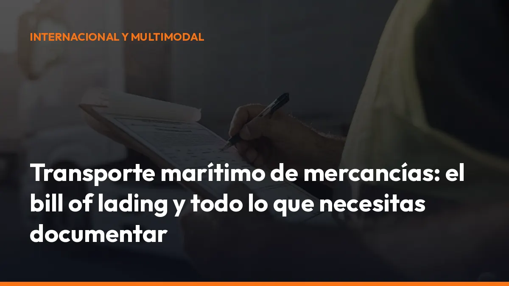

Transporte marítimo de mercancías: el bill of lading y todo lo que necesitas documentar

La solución es sencilla: prepara cada documento antes de que la carga llegue al puerto y mantén toda la información disponible para tu equipo, tu transitario y tu transportista.
Bill of lading: el documento central del transporte marítimo
El bill of lading, también llamado conocimiento de embarque o B/L, es el documento principal de la operación marítima.
Lo emite la naviera, el transportista marítimo o el agente correspondiente. Cumple varias funciones:
- Contrato de transporte: recoge las condiciones del servicio entre el cargador y la naviera.
- Recibo de la mercancía: confirma que la carga ha sido recibida.
- Prueba de embarque: acredita que la mercancía ha sido cargada o aceptada para su transporte.
- Documento de control: identifica el buque, el origen, el destino, el consignatario, los bultos y el tipo de mercancía.
- Título representativo: en determinados formatos, permite transmitir los derechos sobre la carga.
Revisa siempre que el B/L coincida con la factura comercial y el packing list. Comprueba especialmente:
- Nombre y dirección del shipper.
- Consignee y notify party.
- Puerto de carga y puerto de descarga.
- Descripción de la mercancía.
- Número de bultos.
- Peso bruto y volumen.
- Número de contenedor y precinto.
- Incoterm pactado.
- Fecha de embarque.
Un dato incorrecto puede bloquear la entrega o exigir una corrección documental con costes y demoras. Consulta también la explicación práctica de Maersk sobre el bill of lading.
Tipos de bill of lading que debes conocer
No todos los conocimientos de embarque tienen las mismas consecuencias. Antes de aceptar el documento, identifica qué tipo necesitas.
Clean bill of lading
El clean B/L indica que la mercancía se ha recibido aparentemente en buen estado y que no existen reservas visibles sobre daños, embalaje defectuoso o faltas.
Es habitual cuando intervienen bancos, cartas de crédito o compradores que exigen una prueba clara del estado de la carga.
On-board bill of lading
El on-board B/L confirma que la mercancía ha sido cargada físicamente a bordo del buque.
La fecha de embarque puede ser decisiva para cumplir un contrato, un plazo de entrega o una condición bancaria. No confundas este documento con un “received for shipment”, que solo acredita la recepción para el transporte, no necesariamente la carga a bordo.
Straight bill of lading
El straight B/L es nominativo y no negociable. La naviera entrega la mercancía al consignatario indicado.
Es práctico cuando la operación ya está pagada o existe una relación comercial estable entre comprador y vendedor.
Order bill of lading
El order B/L es negociable. Puede transmitirse mediante endoso y suele utilizarse en operaciones de financiación o cuando el pago todavía está pendiente.
Quien tenga legítimamente el documento puede acreditar el derecho a recibir la mercancía.
Sea waybill
El sea waybill funciona como contrato de transporte y recibo, pero no es un título de propiedad negociable. La carga se entrega al consignatario identificado sin necesidad de presentar originales físicos.
Es más rápido, pero exige confianza entre las partes. Elige este formato solo cuando el riesgo comercial esté controlado.
Packing list: detalla exactamente qué viaja dentro del contenedor
El packing list o lista de contenido permite identificar la mercancía sin abrir todos los bultos. Es fundamental para la naviera, el transitario, la aduana, el almacén y el transportista que realizará la entrega final.
Incluye como mínimo:
- Expedidor y destinatario: quién envía y quién recibe.
- Número de bultos: cajas, palés, bidones o unidades.
- Descripción: detalla el contenido de cada bulto.
- Peso neto y bruto: evita discrepancias durante la inspección.
- Dimensiones y volumen: necesarios para planificar la carga.
- Marcas y numeración: facilitan la identificación.
- Número de factura: conecta el packing list con la operación comercial.
- Contenedor y precinto: imprescindibles en envíos FCL.
No sustituyas la factura comercial por el packing list. La factura acredita el valor de la operación; el packing list describe cómo está organizada físicamente la carga.
Declaración aduanera: prepara el despacho sin bloqueos
La declaración aduanera identifica la mercancía y determina el régimen aplicable: exportación, importación, tránsito, depósito u otro procedimiento.
Para prepararla, el agente de aduanas necesita normalmente:
- Factura comercial.
- Packing list.
- Bill of lading o sea waybill.
- Código arancelario HS o TARIC.
- País de origen.
- Valor de la mercancía.
- Incoterm.
- Licencias o autorizaciones específicas.
- Certificado de origen, cuando proceda.
- Documentación sanitaria, fitosanitaria o técnica si la mercancía lo exige.
Una descripción genérica como “repuestos” o “productos varios” puede provocar una revisión. Describe la mercancía con precisión y conserva una copia digital de cada documento.
Centraliza la documentación operativa en un sistema accesible y evita depender de correos dispersos o carpetas físicas. Con Mi Carga puedes digitalizar la documentación del transporte y mantenerla disponible para tu operativa terrestre.
Incoterms: define quién paga, quién responde y cuándo cambia
el riesgo
Los Incoterms® 2020 de la Cámara de Comercio Internacional determinan cómo se reparten costes, riesgos y responsabilidades entre vendedor y comprador.
No regulan por sí solos la propiedad de la mercancía ni sustituyen al contrato de compraventa. Debes indicar siempre el término completo y el lugar convenido.
En transporte marítimo destacan:
- FOB: el vendedor entrega cuando la mercancía queda a bordo en el puerto de origen. El comprador contrata normalmente el flete principal.
- CFR: el vendedor paga el transporte hasta el puerto de destino, pero el riesgo pasa en origen, cuando la mercancía se embarca.
- CIF: el vendedor paga el flete y contrata un seguro mínimo hasta el puerto de destino. El riesgo también pasa cuando la carga queda a bordo en origen.
- FAS: el vendedor entrega junto al buque en el puerto de carga.
Para contenedores, revisa si FCA describe mejor el punto real de entrega. En muchas operaciones la carga se entrega al terminal o al transportista antes de subir al buque. Ese detalle puede cambiar la asignación del riesgo.
FCL o LCL: elige la modalidad que mejor encaja con tu carga
FCL: Full Container Load
Con FCL utilizas un contenedor completo para una carga o un expedidor.
Ventajas principales:
- Menos manipulaciones.
- Mayor control del precinto.
- Menor exposición a daños por consolidación.
- Plazos normalmente más previsibles.
- Mejor opción para grandes volúmenes.
En el packing list, relaciona cada mercancía con el número de contenedor y el precinto correspondiente.
LCL: Less than Container Load
Con LCL compartes contenedor con mercancías de otros expedidores.
Es adecuado para volúmenes pequeños porque pagas por espacio utilizado. Sin embargo, la carga pasa por más operaciones de consolidación y desconsolidación.
Consecuencias prácticas:
- Puede haber más manipulaciones.
- El plazo puede ser más largo.
- El riesgo de incidencias documentales aumenta.
- Debes revisar cuidadosamente el house B/L y el master B/L cuando interviene un consolidador.
Plazos y fletes marítimos en 2026: planifica con margen
En 2026, el transporte marítimo combina fletes base más moderados con una volatilidad importante. La sobrecapacidad de buques presiona los precios a la baja, pero los conflictos geopolíticos, los desvíos de rutas, la congestión y la temporada alta generan repuntes rápidos.
Algunas referencias de mercado han estimado:
- Correcciones medias globales de fletes de aproximadamente 17% a 25%.
- Tarifas spot Asia-Mediterráneo cercanas a 4.211 USD/FEU en determinados momentos.
- Repuntes posteriores en torno a 5.194 USD/FEU.
- Tarifas FAK que pueden situarse entre 4.700 y 7.500 USD por FEU, según ruta, naviera y fecha.
Son cifras orientativas. Solicita siempre una cotización actualizada y revisa qué incluye:
- Flete base.
- THC de origen y destino.
- Recargo por combustible.
- Congestión.
- Riesgo geopolítico.
- Mercancía peligrosa.
- Demoras y ocupaciones.
- Entrega terrestre y despacho aduanero.
Los plazos también requieren margen. Los informes de fiabilidad de 2026 han situado la puntualidad global de los buques aproximadamente entre el 56% y el 62%, con retrasos medios de alrededor de 5 o 6 días en los servicios que llegan tarde. Añade margen a tu planificación y no comprometas una entrega final basándote únicamente en la fecha estimada de llegada al puerto.
Descarbonización: el transporte marítimo también está cambiando
España ha aprobado un Plan de Acción Nacional para la Descarbonización del Transporte Marítimo con 250 millones de euros para el periodo 2026-2030.
Las ayudas se orientan principalmente a:
- Renovar y transformar buques existentes.
- Construir buques de bajas emisiones.
- Desarrollar combustibles renovables como metanol o amoniaco.
- Impulsar proyectos piloto.
- Reducir las emisiones vinculadas al transporte marítimo.
Este plan se dirige sobre todo a navieras y operadores de flota. Es diferente del eco-incentivo marítimo, que busca trasladar mercancías de la carretera al mar mediante servicios de transporte marítimo de corta distancia. Consulta los detalles en la información oficial del Ministerio de Transportes sobre el eco-incentivo marítimo.
Para ti, la consecuencia es práctica: documentar bien cada envío será cada vez más importante para demostrar volúmenes, rutas, fletes y cambio modal.
Checklist antes de embarcar
Antes de confirmar la salida, comprueba:
- Factura comercial: valor, moneda, origen e Incoterm correctos.
- Packing list: bultos, pesos, dimensiones y precintos.
- Bill of lading: consignatario, puertos, contenedor y fecha.
- Aduanas: código TARIC, permisos y régimen declarado.
- Seguro: coberturas contratadas y certificado disponible.
- FCL o LCL: modalidad adecuada y documento correcto.
- Plazos: margen añadido para retrasos.
- Entrega final: transportista, dirección y documentación disponible.
Guarda una copia digital y comparte únicamente la versión validada. Si quieres ordenar mejor la documentación de tus transportes, solicita información a Mi Carga o empieza tu suscripción.
El transporte marítimo de mercancías exige coordinación, pero no tiene por qué convertirse en una cadena de correos, papeles y correcciones. Prepara el bill of lading, valida el packing list, define bien el Incoterm y mantén tus documentos disponibles desde el puerto hasta la entrega final.
Genera tus 10 primeros documentos gratis con Mi Carga
DeCA, carta de porte y ADR, en PDF, con QR y archivo automático en la nube.
Empezar con 10 documentos gratisArtículo informativo. Consulta siempre el caso concreto de tu operación. ¿Dudas? Escríbenos.